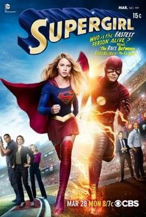
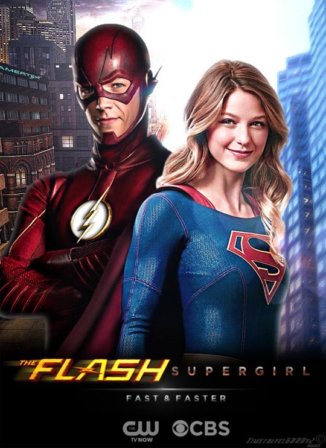
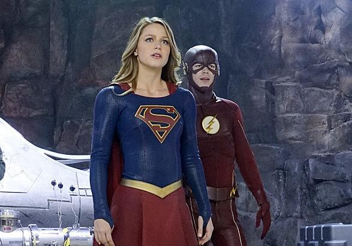
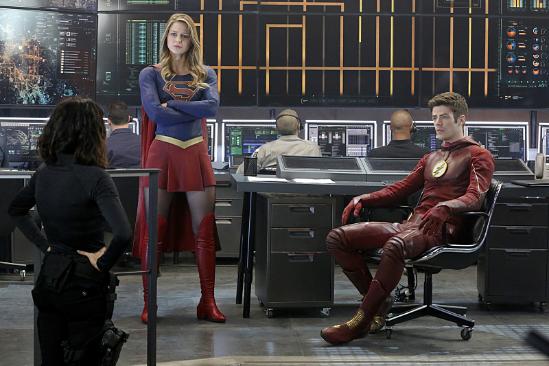
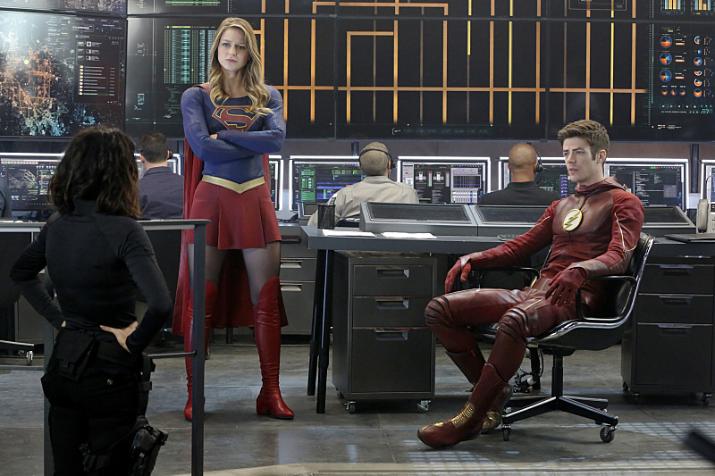

"World’s Finest" is the eighteenth episode of the first season of Supergirl, and the eighteenth episode overall. It aired on March 28, 2016. It acts as a crossover between Supergirl and The Flash.
| Serie | Episode No. | Episode Title | Original Air Date | |
|---|---|---|---|---|
| Part 1 | Supergirl | Season 1Epsiode 18 | "World’s Finest" | March 28, 2016 |

Kara gains a new ally when the lightning-fast superhero The Flash suddenly appears from an alternate universe and helps Kara battle Siobhan, aka Silver Banshee, and Livewire in exchange for her help in finding a way to return him home.

Siobhan is undergoing tests at the DEO while Supergirl talks to Winn about the people's continued lack of trust in her. Dr. Hamilton reveals that Siobhan is definitely human and is unable to provide any explanation for her powers. Siobhan leaves, frustrated. As she does, she sees Lucy questioning Livewire about a number of people being hospitalised by electrical interference to their brains. Livewire denies all knowledge. Back at CatCo, Cat gives Kara advice on winning over James. Siobhan, who has been plagued by headaches, turns up and uses her sonic scream to knock Kara out of a window. She is rescued in mid-air by the Flash, who accidentally speeds her out of the city and is then confused when she turns into Supergirl and flies off. Both are confused that the other hasn't heard of them. The Flash unmasks and introduces himself as Barry Allen, saying he's on the wrong Earth. Back in Kara's office, Barry quickly learns that there is no S.T.A.R. Labs on this Earth. Winn and James join them and explain Siobhan left soon after Kara. Barry explains about the multiverse, how different Earths occupy the same space at different frequencies and how he accidentally went fast enough to pass through the barrier (in "Versus Zoom"). James is uncomfortable at Kara and Barry's sudden closeness, to Winn's amusement. They run into Cat, who has an image of the Flash rescuing Kara. Despite Barry(who the others claim is their cousin)'s protests to the contrary, she wants to name this new hero “the Blur”. Siobhan meets her aunt Sinead, who runs a magic shop and quickly realizes what has happened to her. She explains that as a result of a curse by a banshee on one of their ancestors centuries ago, all the women in their family gain the power when someone wrongs them. If they don't kill the source of their anger, the power will grow until it destroys their souls. Siobhan knows Supergirl will protect Kara (unaware they are the same person) so decides to gain an ally. She uses her scream to break Livewire out of containment and Livewire easily overpowers the guards. Lucy informs Kara of the escape and she tries to get Cat to go into hiding but Cat is confident Supergirl will defeat Livewire. Kara goes to Barry for help and she and Winn take him to the DEO where he offers his CSI skills. Lucy also notes James' jealousy and tells him not to stay away from Kara because of her. Livewire meets Siobhan at an abandoned warehouse where Siobhan suggests they team up to kill Cat, Supergirl and Kara. Livewire says Siobhan will need a makeover first. Barry is able to use the atmospheric disturbance to track Livewire. He wants to come up with a plan first but Supergirl insists they need to contain Livewire quickly. She and the Flash head to the warehouse to find not only Livewire but Siobhan, now costumed and made up and calling herself Silver Banshee. The Flash's use of his powers merely charges Livewire up and causes her to knock him down, while Silver Banshee's scream leaves Supergirl's ears bleeding. Despite making a few hits of their own, the heroes have to retreat. Kara apologises to Barry for going in without a plan, explaining she's trying hard to make up for recent mistakes. Barry says these things take time. Livewire and Silver Banshee turn up at CatCo, where Livewire stops James summoning Supergirl and Silver Banshee rejects Winn's attempts to reason with her. Back at the DEO, Barry has made some ear buds to block Silver Banshee's powers. Lucy tells him and Supergirl that Cat has been kidnapped. Livewire and Silver Banshee have Cat chained up in the park where Cat begs Livewire not to kill her and leave her boys with nothing. Supergirl and the Flash arrive and the ear buds do their work, protecting them from Silver Banshee. Livewire and the Flash fight on a rooftop and Livewire triumphs, while Supergirl frees Cat and confronts Silver Banshee. Livewire tries to blast down a helicopter above them and Supergirl blocks the electricity with her body but is badly injured. Showing she has regained the city's trust, the bystanders move to shield Supergirl and a fire crew turn their hoses on Livewire, shorting out both her and Silver Banshee. Kara tells James and Winn that Barry has given National City Police Department some advice on dealing with meta-humans, meaning Livewire and Silver Banshee are now in their hands, noting James once said her enemies deserved a fair trial. She asks Cat for permission to go and see off Barry; Cat has already guessed he is the Flash. Supergirl meets him and he suggests they combine their speeds to push him across the dimensional barrier. He also gives her advice on James. They both race across the landscape, and the Flash vanishes into a dimensional breach. That evening, Kara calls James to her apartment and kisses him, only for him to walk out in a trance, along with other people in the building. A Kryptonian reports to Non that Myriad has been activated: Non notes first National City and then the whole Earth will be theirs. Kara watches in horror as the entire city walks through the streets in a trance.
  
